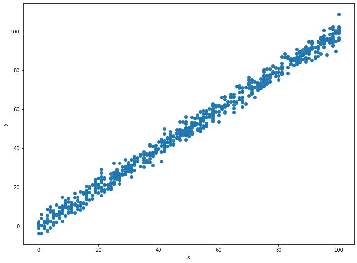

โดย ชิตพงษ์ กิตตินราดร | ธันวาคม 2562
เมื่อเราเข้าใจแล้วว่า Linear regression algorithm ทำงานอย่างไร ทีนี้ก็มาลองสร้างโมเดลพยากรณ์กัน
โดยทั่วไป การสร้างโมเดลมีขั้นตอนต่อไปนี้:
โดยจะแนะนำทีละขั้นตอน
ข้อมูลที่จะนำมาสร้างโมเดล Machine learning มีที่มาหลากหลาย ซึ่งเราสามารถใช้ Python ดึงข้อมูลจากหลากหลายรูปแบบมาใช้ได้ ในขั้นนี้เราจะเน้นการเตรียมข้อมูลให้อยู่ในรูปแบบข้อมูลที่มีโครงสร้าง (Structured data) ที่นำเสนอในรูปแบบตาราง
| x | y | |
|---|---|---|
| 0 | 24 | 21.549452 |
| 1 | 50 | 47.464463 |
| 2 | 15 | 17.218656 |
หลักการเตรียมข้อมูล คือให้สร้างข้อมูลใน Spreadsheet โดยแนวนอนคือตัวอย่างแต่ละรายการ ส่วนแนวตั้งคือข้อมูลของตัวอย่างแต่ละรายการ เราเรียกข้อมูลแนวตั้ง ว่า Feature ซึ่งในกรณี จะเห็นว่ามี 1 Feature คือ x ส่วนคอลัมน์สุดท้าย เราเก็บไว้สำหรับคำตอบ ซึ่งเราต้องการหาเมื่อนำโมเดลมาพยากรณ์จากข้อมูลใหม่ เราเรียกคอลัมน์คำตอบนี้ว่า Label
ตัวอย่างเช่น ข้อมูลชิ้นที่ 1 มี Feature x คือ 50 ซึ่งเชื่อมโยงกับ Label y คือ 47.464463 เราจะฝึกโมเดลให้เรียนรู้ความสัมพันธ์ระหว่าง Feature กับ Label เพื่อให้ได้สมมุติฐานที่ดีที่สุด ว่า Feature กับ Label สัมพันธ์กันอย่างไร เมื่อได้สมมุติฐานนี้ก็จะสามารถพยากรณ์ Label จากข้อมูลชิ้นใหม่ที่รู้แค่ Feature ได้
อนึ่ง เราไม่จำเป็นต้องใส่ลำดับที่ของข้อมูลในคอลัมน์แรกอย่างที่เห็นในตัวอย่าง เพราะเดี๋ยว Library pandas จะสร้างดัชนีเหล่านี้ให้เราเอง
เมื่อเตรียมข้อมูลเสร็จ ให้ Save เป็น .csv ซึ่งเป็นรูปแบบมาตรฐานสำหรับข้อมูลแบบตาราง
ขั้นต่อไปเราต้องตัดสินใจว่า เราจะสำรวจข้อมูลและสร้างโมเดลด้วยเครื่องมือใด เพื่อที่จะได้โหลด Library ของ Python ที่ต้องใช้เข้ามา ซึ่งสำหรับตัวอย่างนี้เราจะใช้เครื่องมือดังนี้
เราเลือกใช้ Scikit-learn เพราะเป็น Library ที่ออกแบบมาดี ใช้งานง่าย สามารถเลือก Algorithm ได้หลากหลายโดยมีวิธีการฝึกคล้ายๆ กัน การใช้ Framework อย่าง Scikit-learn จะช่วยย่นเวลาและลดโอกาสที่จะเกิดข้อผิดพลาดได้มาก เมื่อเทียบกับการเขียน Algorithm ขึ้นมาเอง
แนะนำให้ไปอ่านคู่มือและคำแนะนำการใช้แต่ละ Library เพื่อทำความคุ้นเคย จะได้ใช้งานได้คล่องและประยุกต์กับสถานการณ์ได้หลากหลาย
เมื่อตัดสินใจได้แล้วเราก็เริ่ม Import Library เหล่านี้ได้:
import numpy as np
import pandas as pd
import matplotlib.pyplot as plt
from sklearn.linear_model import LinearRegression
สำหรับใครที่มาถึงจุดนี้แล้วไม่เข้าใจว่าต้องพิมพ์โค้ดนี้ที่ไหน อย่างไร และแต่ละบรรทัดหมายความว่าอะไร แนะนำให้หยุดก่อน แล้วไปศึกษา Python ขั้นพื้นฐาน ซึ่งปัจจุบันหาอ่านได้ทั่วไปบนเว็บหรือจะเรียนตามคอร์สออนไลน์ต่างๆ ก็ได้
ต่อมาเราจะเริ่มโหลดข้อมูล โดยใช้ pandas:
# Load the data
# Data from https://www.kaggle.com/venjktry/simple-linear-regression/data
data_train = pd.read_csv("data/lr_train.csv")
data_test = pd.read_csv("data/lr_test.csv")
ข้อสังเกตที่สำคัญในขั้นนี้ คือจากตัวอย่างเราจะเห็นว่าได้แบ่งข้อมูลเป็นสองไฟล์ คือ lr_train.csv และ lr_test.csv การแบ่งนี้เกิดขึ้นเพราะในกระบวนการสร้างโมเดล เราจะต้องกันข้อมูลส่วนหนึ่งเอาไว้ไม่ให้โมเดลได้เห็นก่อน เพื่อจะได้เอาโมเดลที่ได้ไปทดลองพยากรณ์กับข้อมูลที่กันเอาไว้ เพื่อทดสอบความแม่นยำ โดยปกติเราจะใช้สัดส่วน Train set: Test set ประมาณ 80:20 แต่ถ้าหากมีข้อมูลหลายรายการมาก เช่นเป็นหลักล้านขึ้นไป ก็สามารถเพิ่มสัดส่วนเป็น 90:10 หรือไปจนถึง 99:1 ก็ได้ เพราะโดยทั่วไปเราต้องการข้อมูลที่เอาไว้ฝึกโมเดลที่มีจำนวนมากที่สุดเท่าที่จะทำได้ ส่วนข้อมูลที่เอาไว้ทดสอบ ถ้าปริมาณข้อมูลรวมมีเยอะมาก ข้อมูลทดสอบก็มีจำนวนมากเพียงพอถึงแม้สัดส่วนจะน้อยก็ตาม
ในกรณีของเรา Train set มี 699 รายการ ส่วน Test set มี 300 รายการ คิดเป็นสัดส่วนประมาณ 70:30
สิ่งสำคัญอีกประการคือการแบ่งข้อมูลออกเป็น Train set และ Test set จะต้องแบ่งแบบสุ่ม ไม่ใช่การตัดเอาส่วนต้นมาเป็น Train set และที่เหลือเป็น Test set เพราะเราต้องการให้ข้อมูลทั้งสองชุดเป็นตัวแทนของรายการข้อมูลที่มี Feature และ Label ที่หลากหลาย กระจายตัวออกตามธรรมชาติ อนึ่ง ในความเป็นจริงเราไม่จำเป็นต้องแบ่งข้อมูลออกเป็นสองไฟล์ ให้ใช้ไฟล์เดียว แล้วใช้ฟังก์ชัน train_test_split ของ Scikit-learn สุ่มแบ่งให้โดยอัตโนมัติได้
ข้อมูลที่โหลดมา ให้เก็บไว้ใน Object โดยในที่นี้ Train set เก็บไว้ใน data_train ส่วน Test set เก็บไว้ใน data_test
เมื่อเราโหลดข้อมูลลงใน Object แล้ว เราก็จะสำรวจข้อมูลที่มี โดยใช้ Method ต่างๆ ของ pandas object ดังนี้:
# Explore the data
print("See the data sample:\n")
print(data_train.head())
print("See the summary of features:\n")
print(data_train.info())
print("Calculate basic stat of each feature:\n")
print(data_train.describe())
data_train.head() จะแสดงข้อมูล 5 รายการแรกให้เราดู:
| x | y | |
|---|---|---|
| 0 | 24 | 21.549452 |
| 1 | 50 | 47.464463 |
| 2 | 15 | 17.218656 |
| 3 | 38 | 36.586398 |
| 2 | 87 | 87.288984 |
data_train.info() จะแสดงจำนวนและประเภทของข้อมูลแต่ละคอลัมน์ และข้อมูลอื่นๆ เช่นจำนวน Memory ที่ใช้:
RangeIndex: 699 entries, 0 to 698
Data columns (total 2 columns):
x 699 non-null int64
y 699 non-null float64
dtypes: float64(1), int64(1)
memory usage: 11.0 KB
เราจะเห็นว่ามีข้อมูล 699 รายการ โดยจำนวนรายการของ x และ y จะต้องเท่ากัน เพื่อให้ Algorithm สามารถจับคู่คำนวนได้ถูกต้อง นอกจากนี้ ให้สังเกตว่า x เป็นข้อมูลในรูปแบบ int64 คือจำนวนเต็ม ส่วน y เป็นประเภท float64 คือจำนวนที่มีทศนิยม
ต่อมา data_train.describe() จะแสดงสถิติพื้นฐานของข้อมูลแต่ละคอลัมน์:
| x | y | |
|---|---|---|
| count | 699.000000 | 699.000000 |
| mean | 50.014306 | 49.939869 |
| std | 28.954560 | 29.109217 |
| min | 0.000000 | -3.839981 |
| 25% | 25.000000 | 24.929968 |
| 50% | 49.000000 | 48.973020 |
| 75% | 75.000000 | 74.929911 |
| max | 100.000000 | 108.871618 |
ใครที่อ่านสถิติขั้นพื้นฐานเป็น จะพบว่าทั้ง x และ y มีลักษณะคล้ายกันมาก เช่น มีค่า Mean และส่วนเบี่ยงเบนมาตรฐานใกล้เคียงกัน มีการกระจายตัวแบบ Normal distribution มีค่าต่ำสุดและสูงสุดใกล้กัน ซึ่งถ้าเราเห็นข้อมูลแบบนี้ก็อาจจะเริ่มนึกออกว่า x และ y น่าจะมีความสัมพันธ์อย่างใกล้ชิดกันมาก (มี Correlation สูง) ซึ่งจะยืนยันได้ด้วยการพล็อตกราฟแบบ Scatter plot โดยใช้ matplotlib:
# Visualise the data
plt.figure(figsize=(12,9))
plt.scatter(data_train["x"], data_train["y"])
plt.xlabel("x")
plt.ylabel("y")

ซึ่งยืนยันการวิเคราะห์ของเราจากการอ่านสถิติในขั้นตอนที่แล้ว ว่า x กับ y มีความสัมพันธ์เป็นเส้นตรงซึ่งกันและกัน ซึ่งทำให้เราตัดสินใจเลือกใช้ Linear regression algorithm ในการสร้างโมเดล เพราะเป็นโมเดลที่มีสมมติฐานว่าความสัมพันธ์ระหว่าง Feature กับ Label เป็นเส้นตรง
อนึ่งจะอธิบายไวยากรณ์ของโค้ดด้านบนเพื่อความเข้าใจที่กระจ่าง:
plt.figure(figsize=(12,9)) สร้างกราฟว่างๆ ขนาด 12 x 9 เพื่อเป็นพื้นที่ให้เราใส่ข้อมูลplt.scatter(data_train["x"], data_train["y"]) สั่งให้พล็อตกราฟแบบ Scatter plot โดยกำหนด Argument คือ (ข้อมูลสำหรับแกน x, ข้อมูลสำหรับแกน y) ซึ่งเราจะดึงข้อมูลจาก pandas object ที่โหลดมาไว้แล้ว โดยข้อมูลแกน x กำหนดให้เป็น data_train["x"] ซึ่งแปลว่า "ให้เลือกข้อมูลทั้งหมดจากคอลัมน์ที่ชื่อ "x"" ส่วนข้อมูลสำหรับแกน y ก็ทำลักษณะเดียวกันplt.xlabel("x") และ plt.ylabel("y") กำหนดชื่อป้ายบนแกน x และ y ว่า "x" และ "y" ตามลำดับเมื่อเราเห็นข้อมูลแล้วตัดสินใจเลือก Algorithm แล้ว ก็ถึงเวลาสร้างโมเดลจริงๆ เสียที
เราจะสร้างโมเดลด้วยการเรียกใช้ฟังก์ชัน LinearRegression จากโมดูล linear_model ของ Scikit-learn library
แต่ก่อนอื่นเราต้องเข้าใจก่อนว่า Scikit-learn กำหนดว่าข้อมูลที่จะป้อนเข้าสู่ Algorithm จะต้องเป็น Array ที่มีมิติชัดเจนทั้งด้านแถวและด้านคอลัมน์ เช่น ถ้า Feature มี 1 Feature คือ x และแต่ละ x มี 699 รายการ มิติของข้อมูลชุดนี้ต้องเป็น (699,1)
ซึ่งปัญหาจะเกิดขึ้นตรงนี้ ว่า Object ข้อมูลที่เราโหลดเข้ามา อาจไม่ได้มีมิติครบทั้งสองด้าน เช่น pandas object data_train ของเรา มีมิติ (699,) คือกำหนดมิติชัดเจนแค่ด้านแถว ส่วนด้านคอลัมน์ไม่ได้กำหนด เราจึงต้องแปลงข้อมูลให้มีมิติครบทั้งสองด้านเสียก่อน
วิธีการแปลงคือ เราจะแปลง pandas object เป็น numpy array โดยในกรณีของเราทำดังนี้:
# Format X_train and y_train into 2D vector
X_train = np.array(data_train["x"]).reshape(-1,1)
y_train = np.array(data_train["y"]).reshape(-1,1)
X_test = np.array(data_test["x"]).reshape(-1,1)
y_test = np.array(data_test["y"]).reshape(-1,1)
print("X_train shape = " + str(X_train.shape))
print("y_train shape = " + str(y_train.shape))
print("X_test shape = " + str(X_test.shape))
print("y_test shape = " + str(y_test.shape))
Method .reshape(-1,1) เป็นการเติมมิติให้ด้านคอลัมน์ ผลที่ได้คือ:
X_train shape = (699, 1)
y_train shape = (699, 1)
X_test shape = (300, 1)
y_test shape = (300, 1)
ซึ่งเป็นรูปแบบข้อมูลที่พร้อมจะนำเข้า Algorithm ให้ฝึกโมเดล
ต่อมาคือขั้นตอนที่สำคัญที่สุด แต่สั้นที่สุด นั่นคือการฝึกโมเดลด้วย Linear regression algorithm:
# Train the data
lr = LinearRegression().fit(X_train, y_train)
print("LR coefficient is", lr.coef_)
print("LR intercept is", lr.intercept_)
ผลที่ได้คือ:
LR coefficient is [[1.00065638]]
LR intercept is [-0.10726546]
อธิบายว่าเกิดอะไรขึ้นบ้าง:
lr = LinearRegression().fit(X_train, y_train) เราเรียกฟังค์ชัน LinearRegression() แล้วใช้ Method .fit ป้อน Vector ของ feature และ Vector ของ label ลงไปในฟังค์ชัน โดยฟังก์ชันจะใช้ข้อมูลเหล่านี้มาคำนวนหา Parameter ที่จะลด Cost function ให้มีค่าต่ำที่สุด โดย Parameter สำหรับ Linear regression ก็คือ Coefficient (= w) และ Intercept (= b) อยู่ใน Hypothesis function ของ Linear regression:
ซึ่งทำให้เราสามารถพยากรณ์ค่า y ได้ด้วยการใส่ค่า x ลงไปตามที่ต้องการ
แต่ก่อนที่เราจะนำโมเดลไปใช้ เราต้องมั่นใจเสียก่อนว่าโมเดลของเราเป็นโมเดลที่ดี นั่นคือมีความแม่นยำสูงพอที่เราจะเชื่อได้ว่าเป็นตัวแทนข้อมูลชุดนี้ได้
หนึ่งในข้อสงสัยที่แทบทุกคนจะถามเมื่อกำลังพิจารณาจะนำ Machine learning มาแก้ปัญหาของตน ก็คือจะรู้ได้อย่างไรว่าโมเดลจะมีความแม่นยำ คำตอบคือมีวิธีการทดสอบและชี้วัดความแม่นยำของโมเดลหลากหลายวิธี ซึ่งแต่ละวิธีก็จะเหมาะสมกับ Algorithm และสถานการณ์ที่แตกต่างกันออกไป
สำหรับ Linear regression เราจะใช้ Method .score ของ Scikit-learn ในการตรวจสอบความแม่นยำของโมเดล โดยมีวิธีการเรียกใช้ คือ:
# Evaluate model's accuracy on train and test set
print("Train set accuracy = " + str(lr.score(X_train, y_train)))
print("Test set accuracy = " + str(lr.score(X_test, y_test)))
Method .score นี้จะแตกต่างกันสำหรับแต่ละโมเดล โดย Linear regression จะเรียกใช้วิธีที่เรียกว่า ซึ่งมีสูตรคำนวนดังนี้:
สำหรับตัวอย่างของเรา ได้ผลดังนี้:
Train set accuracy = 0.9907015319025518
Test set accuracy = 0.9888014444327563
พูดง่ายๆ ก็คือเมื่อเทียบกับ Train set 699 ตัวอย่าง มีความแม่นยำ 99.07% ส่วนเมื่อเทียบกับ Test set 300 ตัวอย่าง มีความแม่นยำ 98.88%
สุดท้าย เรามาลองพล็อตกราฟดูว่าโมเดลของเรามีหน้าตาเป็นอย่างไร เมื่อเทียบกับข้อมูลจริง:
# Make a prediction
y_pred = lr.predict(X_test)
# Visualise the model VS actual data
plt.figure(figsize=(12,9))
plt.scatter(X_test, y_test)
plt.plot(X_test, y_pred, color="red", linewidth=3)
plt.xlabel("x")
plt.ylabel("y")
การสร้างกราฟของโมเดล ทำได้โดยการเรียก Method .predict โดยใส่ข้อมูล X_test ลงไป เพื่อให้โมเดลพยากรณ์ค่า y ออกมาเป็นเส้นตรง กำหนดผลที่ได้ลงไปใน Object y_pred จากนั้นเอา y_pred ไปพล็อตในแกน y เป็นเส้นตรงเมื่อเทียบกับ X_test ก็จะได้ฟังก์ชันเส้นตรงของโมเดล
จะเห็นว่าเส้นฟังก์ชันโมเดลสีแดงของเรา ผ่ากลางกลุ่มข้อมูลตัวอย่างแบบพอดีๆ เป็นการยืนยันให้เห็นด้วยตา ว่าโมเดลของเราน่าจะมีความแม่นยำสูงที่สุดเท่าที่จะเป็นไปได้
เป็นอันว่าเราได้สร้างโมเดลพยากรณ์แบบ Linear regression ตัวแปรเดียว ได้สำเร็จเป็นที่เรียบร้อย ตอนต่อไปจะมาเรียนรู้การสร้างโมเดลแบบ Binary classification เพื่อจำแนกข้อมูลออกเป็นสองหมวด คือ "ใช่" กับ "ไม่ใช่" กัน
หน้าแรก | บทที่ 2 Linear Regression Algorithm | บทที่ 4 Logistic Regression